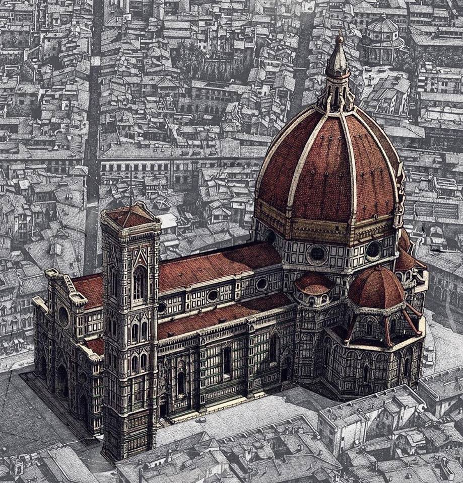

I negozi di souvenir sono un vero e proprio tesoro di autenticità e qualità artigianale. Ogni pezzo racconta una storia, portando con sé l'essenza della cultura e della tradizione italiane. Dai pregiati tessuti fiorentini alle ceramiche dipinte a mano di Sicilia, ogni souvenir è un'opera d'arte unica, creata con passione e maestria. La qualità dei prodotti italiani è rinomata in tutto il mondo, grazie all'attenzione ai dettagli e all'uso di materiali pregiati. Ogni oggetto riflette l'amore per la bellezza e la ricerca della perfezione che contraddistinguono l'artigianato italiano. Nei negozi di souvenir italiani, i visitatori possono trovare una vasta selezione di prodotti, dai classici magneti e t-shirt ai gioielli raffinati e agli oggetti d'arredamento eleganti. Ogni acquisto diventa così un modo per portare a casa un pezzo d'Italia, un ricordo tangibile di un viaggio indimenticabile.
La Nostra Città
Firenze, la città dell'arte e della cultura, incanta i visitatori con la sua bellezza senza tempo e il suo ricco patrimonio storico. Situata nel cuore della Toscana, questa città affascinante è famosa per i suoi monumenti rinascimentali, le opere d'arte straordinarie e i paesaggi mozzafiato. Passeggiare per le strette strade lastricate di Firenze significa immergersi in un museo all'aperto, dove ogni angolo rivela una storia affascinante. Dai magnifici Uffizi alla maestosa Cattedrale di Santa Maria del Fiore, ogni luogo è un capolavoro da scoprire. Ma Firenze non è solo storia e arte; è anche una città vibrante, ricca di vita e di energia. Le sue piazze animate, i mercati colorati e le deliziose trattorie offrono un'esperienza sensoriale unica. Respirare l'atmosfera magica di Firenze è un viaggio nel tempo e nello spirito, un'esperienza indimenticabile che lascia un'impronta indelebile nel cuore di chiunque la visiti.
Sono rimasto impressionato dalla qualità e dall'autenticità dei prodotti offerti in questo negozio. Ogni articolo racconta una storia e riflette la cultura locale. Consiglio vivamente di visitare questo negozio per trovare souvenir unici che durano nel tempo.
Ho trovato il regalo perfetto per i miei amici e parenti in questo negozio di souvenir. La varietà di oggetti disponibili è incredibile: dalle tradizionali t-shirt e magneti alle opzioni più insolite e artistiche. Prezzi ragionevoli e atmosfera accogliente!
Un vero paradiso per i viaggiatori! Questo negozio offre una vasta selezione di souvenir unici e autentici, perfetti per portare a casa un pezzo di ricordo indimenticabile dai miei viaggi. Il personale è cordiale e ben informato, rendendo l'esperienza di shopping ancora più piacevole.